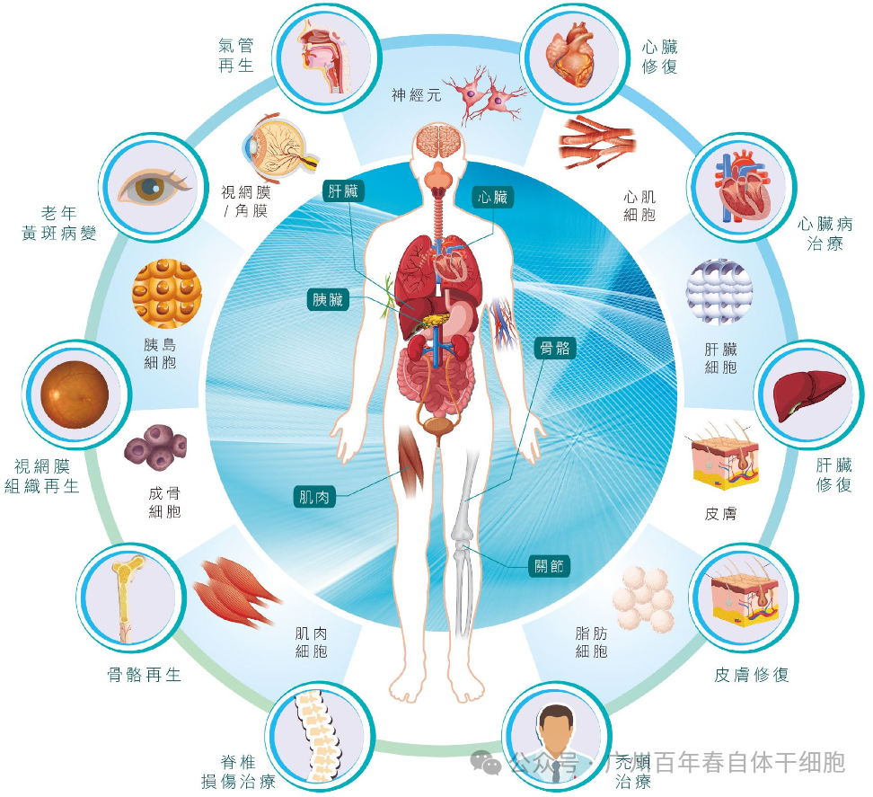
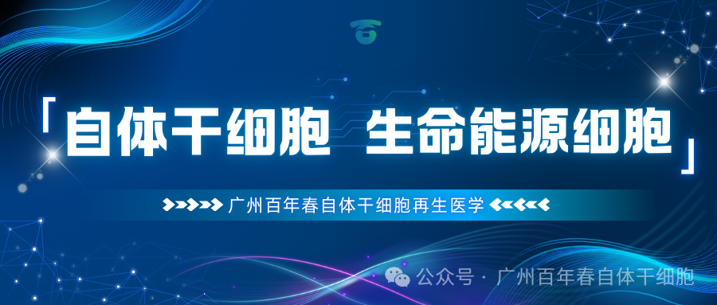

别等身体亮红灯！百年春自体干细胞，为您定制细胞级抗衰防线
2026-03-04

About Us
关于百年春
在再生医学的浪潮中，干细胞疗法无疑是最受瞩目的“明星技术”，它为糖尿病、肝硬化、膝骨关节炎等众多难治性疾病患者打开了新的希望之门。
但不少初次了解的朋友都会心生疑惑：“为什么干细胞治疗建议至少输三次？”其实这个问题的答案，基于干细胞的生物学特性、人体修复规律，更被无数临床数据所印证。
今天我们就拆解其中的科学逻辑，带你看懂“多次回输”背后的门道。
想明白为什么要多次回输，首先要认清干细胞和传统药物的本质区别——它是有生命的“活细胞”，而非稳定的化学分子。就像我们体内的红细胞、皮肤细胞有生命周期一样，干细胞进入体内，开始进入自我复制和更新，替代和修复体内衰老病变的细胞，不过体内细胞衰老的速度过快则需要多次回输，才能更稳定地维持其在体内的作用效果。
更关键的是，单次回输的细胞数量有限，面对受损组织的修复需求，往往只能完成初步“破冰”，难以实现持续、深入的修复效果。这就像盖房子，只派一批工人干一个月，大概率只能打个地基，想要完成主体结构，必须有后续工人接力。
多次输注的科学逻辑正在于此：当首批干细胞完成初步修复使命并开始代谢时，后续输注的细胞能及时“接棒”，持续补充修复力量，避免效果中断。而“至少三次”的方案，正是为了有效覆盖更长的修复窗口期，让治疗效果形成积累、逐步巩固。
人体修复是一个渐进过程，3次回输对应不同阶段：
首次回输：
代替衰老的细胞、增援体内干细胞修复受损部位，激活体内休眠干细胞，启动修复信号，为后续修复创造条件。
第二次回输：
干细胞大量增殖并分化为目标细胞，强化修复效果。
第三次回输：
促进新生组织功能成熟，建立稳定、持久的再生微环境，巩固治疗效果。

Part.3 “归巢”之路艰难： 多轮增援提升靶区细胞浓度
干细胞有个神奇的能力——“归巢性”，就像自带导航系统，能自主寻找并迁移到身体的损伤部位。但这条“归巢之路”远比我们想象中艰难，并非所有输入的干细胞都能顺利抵达“战场”。
当干细胞通过静脉输注进入人体后，大量细胞会先在肺部短暂停留、交换信号；随后，它们需要循着损伤部位释放的特殊“导航信号”（如医学上的SDF-1/CXCR4轴）艰难迁移。多次回输干细胞提供了多轮“增援”机会，通过持续补充细胞，能显著提升靶区的有效细胞浓度，让修复效果从“可能”变为“现实”。
抵达靶区后，干细胞会通过三种核心机制发挥作用：一是旁分泌效应，分泌多种生长因子和外泌体，调节炎症环境、促进血管生成；二是免疫调节，平衡T细胞、巨噬细胞等免疫细胞功能，减轻过度免疫反应；三是定向分化，在特定微环境下转化为骨细胞、软骨细胞等功能细胞，直接参与组织再生。只有当靶区细胞浓度足够时，这些机制才能充分启动。
每个人的身体都是独一无二的，年龄、身体状况、疾病类型与严重程度、体内微环境代谢速度，甚至对干细胞的反应，都存在巨大差异。临床中经常能观察到这样的现象：不少人第一次输注干细胞后“没什么感觉”，但在完成第二次、第三次输注后，才会明显感受到精力提升、疼痛缓解等“体感反应”。 “至少三次”的治疗方案，恰好提供了宝贵的观察与调整窗口。通过前两次治疗，医生能精准评估患者的个体差异——比如干细胞的存活情况、身体的耐受度、初步治疗效果等，进而动态调整后续的干细胞种类、输注方式（静脉、局部或靶向）或治疗间隔，实现真正的“个性化精准医疗”。 疾病和衰老是长期的过程，单次回输难以持久改善，多次回输有助于在体内形成持续的治疗微环境，实现从症状缓解到功能重建的跨越。 如果说生物学机制是理论支撑，那么众多已获批上市的干细胞产品和权威临床研究，则为“多次输注”提供了最坚实的实证依据。目前全球范围内获批的干细胞产品，绝大多数都采用按疗程治疗的方案，且输注次数普遍在3次以上。 权威期刊的研究数据同样说服力十足：2018年《Stem Cells Transl Med》发表的膝骨关节炎临床试验证实，间充质干细胞重复给药的效果显著优于单次给药。 解放军总医院科研团队于《干细胞转化医学》期刊发表的研究成果显示，针对73例糖尿病患者开展的脐带间充质干细胞临床治疗中，通过3次静脉输注干细胞，患者在三个月内血糖水平即出现显著改善，且疗效可持续48周以上。 多项权威临床研究和已获批的干细胞产品均表明，多次回输（通常3次及以上）的疗效显著优于单次回输。例如，治疗膝骨关节炎、糖尿病等疾病时，3次回输组在疼痛缓解、功能改善、疗效维持时间等方面均优于单次或2次回输组。
干细胞回输“至少三次”，从来不是随意的规定，而是基于细胞生命周期、归巢机制、个体差异和海量临床数据的科学策略。它既体现了生命修复“需要时间积累”的客观规律，也是当前细胞治疗领域经过验证的“黄金法则”。 当然，“3次”并非绝对的铁律。随着研究的深入，未来的治疗方案会更加精准化——比如用于抗衰时，由于衰老是持续过程，科学家会建议根据年龄和身体状态持续补充干细胞。但无论方案如何调整，“遵循科学、尊重个体”的核心原则不会改变。

